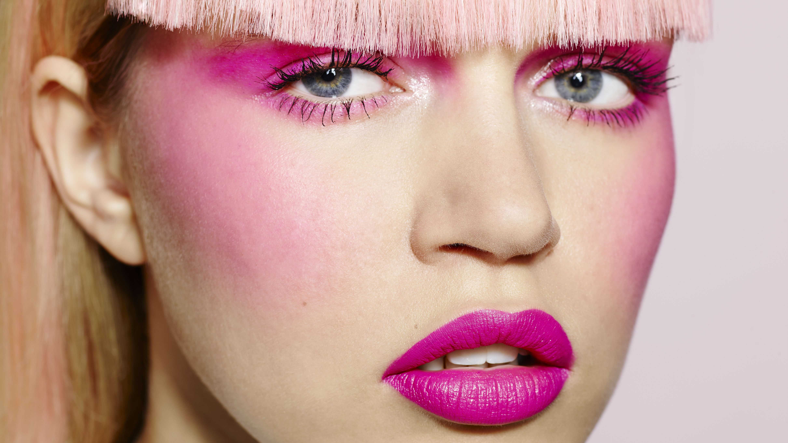

Možda lepota nije najvažnija na svetu, ali je svakako najočiglednija i ostavlja utisak koji kreira dalji tok svake situacije. Danas u većem broju slučajeva lepota nije dar prirode već se ona stiče i održava. Ona je permanentni rad na svom telu i duhu. Zato je važno postići spoljašnji i unutrašnji sklad ličnosti – harmoniju.
Lepotu već nosimo u sebi, samo je treba istaći kvalitetnom i redovnom negom kao i dobrim raspoloženjem
Klikom na NEGA LICA saznajte kako da negujete svoje lice.